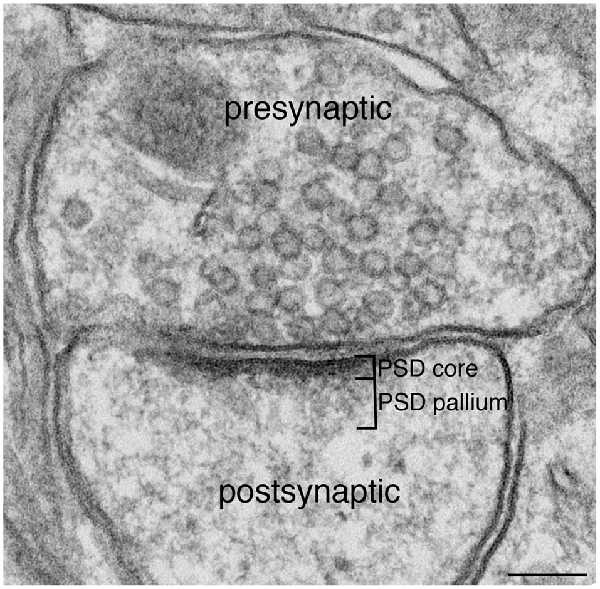
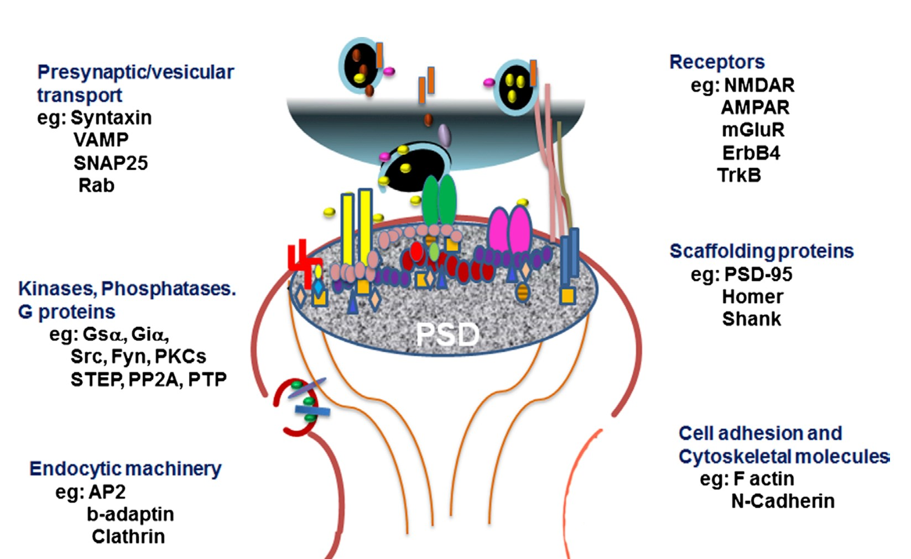
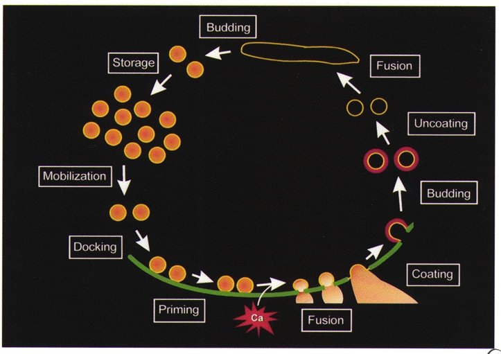
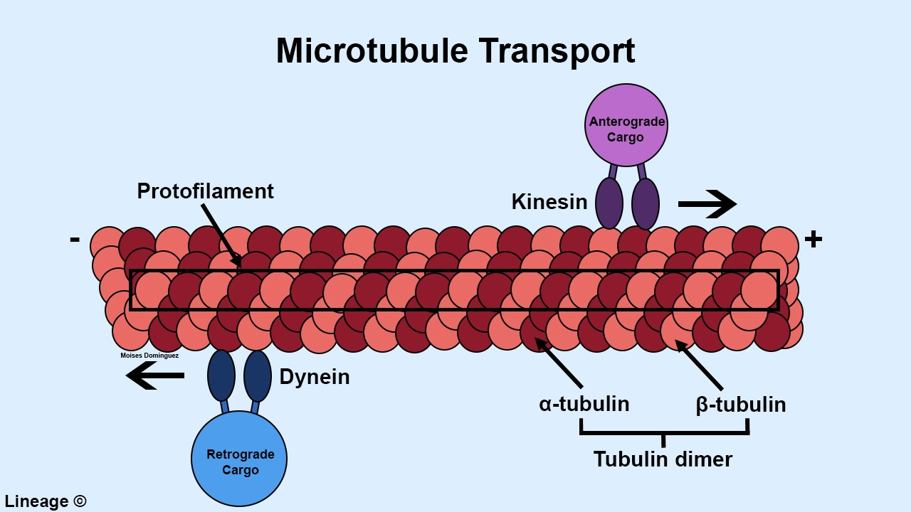
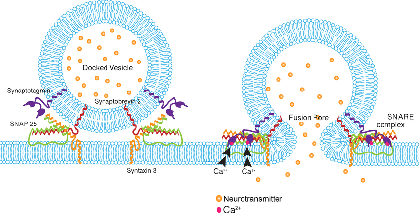
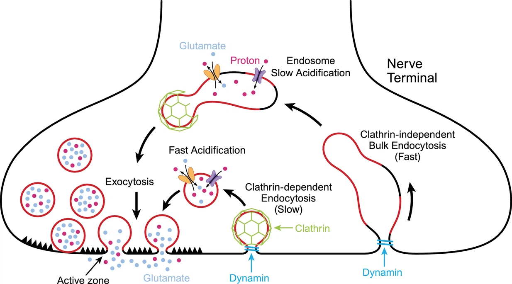
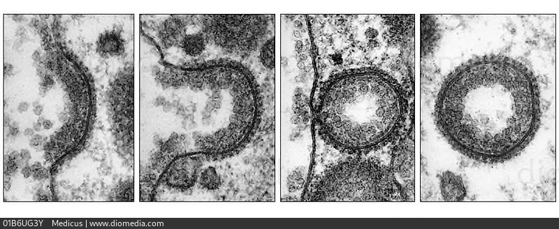

10 시냅스의 미세구조
정신약물학 교과서에서는 흔히, 시냅스를 통한 신호전달의 강도가 전적으로 1) 시냅스 간극의 신경전달물질의 농도, 그리고 2) 시냅스 후 뉴런의 수용체 농도에 좌우되는 것처럼 그려진다. 향정신성 약물의 작용 기전을 설명할 때도 그저 1) 신경전달물질의 분비를 늘리거나, 2) 재흡수를 억제하거나, 3) 수용체에 결합하는 것을 차단하는 것 중 하나로 묘사되었다. 하지만 생체가 신호전달의 강도나 정확성을 조절하고 유지하기 위해서는, 훨씬 더 복잡하고 섬세한 기전을 필요로 한다. 이를 이해하기 위해서는, 단순히 농도와 활성을 동일시하는 1차원적 관점에서 벗어나, 좀더 입체적이고 다면적인 시각을 가져야 한다. 시냅스를 이루는 구조 들은 지극히 세분화되어 서로 유기적으로 기능을 분담하고 있다. 이를 통해 신경전달물질의 작용은 상상하는 것보다 훨씬 섬세하게 조절되고 있다.
10.1 시냅스 후 밀집체
10.1.1 해부학적 구조
시냅스 후 밀집체(postsynaptic density ,PSD)는 흥분성 시냅스 후 뉴런의 세포막에 단백질이 고농도로 밀집되어 있는 부위를 가리킨다. 전자 현미경으로 보면 약 30~40nm 정도의 검게 보이는 원반 모양의 구조물 형태로 나타난다.(Figure 10.1) 이 구조물은 시냅스 전 세포막에서는 발견되지 않으며, 억제성 시냅스 후 신경세포에도 발견되지 않는다. 따라서 흥분성 시냅스만 시냅스 전, 후 세포막의 구조가 다른 비대칭 형태를 갖는다고 할 수 있다. 처음에 이를 발견한 사람의 이름을 따, 비대칭형 시냅스를 Gray1 1형이라 하고 대칭형 시냅스를 Gray 2형이라 부른다.[1]
1 Edward George Gray (1924~1999): 영국의 신경과학자로 전자현미경을 이용하여 신경조직의 미세 구조를 밝히는데 공헌하였다.

해부학적 위치를 고려할 때 PSD는 신경전달물질이 수용체에 결합한 후의 프로세스를 담당하는 구조일 것으로 여겨진다. 실제로 여기에는 400개 이상의 단백질이 밀집되어 있으며, G 단백질과 관련된 효소, 2차 신호전달자를 생성하거나 분해하는 효소, 인산화/탈인산화 효소, 그리고 어댑터(Section 7.3.1)나 뼈대 단백질(Section 8.2.4) 등 구조를 지탱하는 단백질들이 포함되어 있다.[2] 중추신경계에서 대표적으로 흥분성 신호전달을 담당하는 물질이 글루타메이트인 만큼, PSD의 중심부위에는 NMDA 수용체들이 밀집되어 자리잡고 있으며, AMPA, kainate 수용체는 주변부에 위치한다. 도파민, GABA 수용체들 역시 대표적인 구성 요소들이다.
10.1.2 시냅스 후 밀집체의 기능
조화로운 신호전달이란 흥분성 신호와 억제성 신호가 섬세한 균형을 이루는 것이기 때문에 수용체 간의 상호연락(crosstalk)이 활발히 이루어져야 한다. 이를 위해선 무엇보다도 관련된 단백질들이 물리적으로 가까운 위치에 있어야 하는데, 이러한 초미세구조(ultra-fine structure)를 마련해주는 것이 PSD이다. PSD 내에 포함되어 있는 단백질들은, 개개 단백질의 농도 뿐 아니라 초미세구조가 얼마나 질서정연하게 유지되는가에 따라 기능이 좌우된다. 예를 들어 GPCR의 non-canonical 경로(Section 7.3.1)에서 어댑터 단백질인 β-arrestin은 c-Src 등 다른 단백질을 끌어당겨 복합체를 구성하는데, 이렇게 끌어당기는 현상을 anchoring이라 한다.[3]
구조를 이루는데 없어서는 안 되는 또 다른 요소는 뼈대 단백질들이다.(Section 8.2.4) PSD에 존재하는 대표적인 뼈대 단백질로는 PSD-95/SAP902, HOMER, GRIP3 등을 들 수 있다.[4] 이들은 각각 NMDA 수용체, 대사성 글루타메이트 수용체, AMPA 수용체에 결합하여 틀을 잡아준다.
2 Postsynaptic density 95/synapse-associated protein 90 (PSD-95/SAP90)
3 Glutamate receptor interacting protein (GRIP)

PSD는 이렇듯 다양한 분자들이 서로 상호작용할 수 있는 구조적 틀을 마련해주는 기능 말고도, 시냅스 후 뉴런의 세포막을 구획으로 나누어 각각의 구획마다 서로 다른 기능을 할 수 있도록 돕는다. 전자현미경 상 PSD가 원반 모양으로 생겼다고 언급하였는데, 세포막에는 다수의 원반들이 존재하며 이들은 서로 물리적으로 떨어져있다. 각 원반마다 조절되는 양상이 다르기 때문에 서로 다른 신호를 전달한다고 믿어지며, 특정한 신호에 특화되어 있다고 보면 된다. 이를 소위 세포막의 microdomain이라고 하는데, 이렇게 구획으로 나눠짐으로써 서로 다른 PSD 사이에 혼선이 생기는 것을 막아준다고 이해되고 있다.[4] 예를 들어 초기 유전자의 하나인 HOMER는 PSD를 구성하는 중요한 뼈대 단백질인데, 대사성 글루타메이트 수용체에 결합하여 IP3 신호전달을 촉진함으로써 세포 내로의 Ca2+ 유입 정도를 조절한다. Ca2+ 가 세포 내로 유입된다 하더라도 세포질의 부위에 따라 농도 차이가 발생하는데, 이는 각 PSD마다 HOMER의 활성 정도가 다르기 때문으로 이해된다.[6]
10.1.3 조현병과의 관련성
이렇듯 PSD는 정교한 신호전달에 없어서는 안될 구조이기 때문에 PSD를 타겟으로 삼는 조현병 치료 전략을 세워볼 수 있다. 아직 이 개념을 실제로 실현한 치료법이 소개되지는 못했지만, 다수의 항정신병 약물은 PSD를 구성하는 분자에 영향을 끼친다.[2,7] 초기 유전자를 논하면서 소개하였지만, 항정신병 약물은 HOMER의 발현양을 증가시키거나, HOMER 1a/1b의 비율을 끌어올린다.(Section 8.2.4) HOMER의 발현 정도는 각각의 PSD에 따라 다르기 때문에 단일 뉴런의 세포막에서 일종의 지형도(topographical map)를 그릴 수 있는데, 개개 항정신병 약물은 고유한 지형도를 만들어낸다.[8] PSD-95와 같은 뼈대 단백질 역시 항정신병 약물에 의해 기능이 변화한다. 정형 약물인 할로페리돌은 PSD-95를 비롯한 다수의 단백질의 세포 내 이동에 간섭하여 글루타메이트 수용체를 중심으로 한 복합체 형성을 방해하는데 비해, 비정형 약물인 올란자핀은 그런 효과가 발견되지 않았다.[9]
De Bartolomeis 등[10]은 항정신병 약물의 농도를 서서히 높여서 투여하였더니, PSD를 구성하는 Zif268, Homer 1a, Arc, c-fos와 같은 주요 단백질들이 점진적으로 더 많이 PSD 부위로 모여드는 것을 관찰하였다. 이러한 효과는 약물에 따라 다르며, 따라서 임상에서 약물을 교체하면 PSD 단백질들의 발현 지형도가 갑자기 바뀌는 효과를 가져올 수 있다.[11] 항정신병 약물이 HOMER 1a 발현에 미치는 영향은 약물의 종류, 용량, 투여 기간 등에 따라 달라진다는 것도 보고되었다.[12]
이렇듯 항정신병 약물은 PSD를 구성하는 단백질들의 발현과 이동에 영향을 미침으로써, PSD의 초미세구조를 변화시킨다. 이는 뇌의 해부학적 부위뿐 아니라, 단일 세포의 서로 다른 microdomain에서도 조금씩 차이가 나는 차별화되는 변화를 일으킨다. 특히 HOMER가 깊게 관여하는 수상돌기 간극의 성장은 항정신병 약물에 의해 상당한 영향을 받는다.[13]
10.2 신경전달물질 방출의 조절
시냅스 후 뉴런에 PSD가 있다면, 시냅스 전 뉴런에는 신경전달물질을 제때 정확히 방출하는 정교한 기전이 있다. 시냅스 전 축삭 말단(presynaptic axon terminal) 혹은 synaptic bouton4이라고 불리우는 구조물은 축삭 말단의 팽대된 부위로, 여기에는 신경전달물질들이 소포(synaptic vesicle)에 싸여 저장되어 있다. 여기에 축삭을 타고 전기 신호가 도달하면 소포는 active zone5에 1) 접근하여, 2) 융합(fusion)한후, 3) 내용물을 방출하고, 4) active zone에 다시 흡수된다. 수백 수천개의 소포가 active zone에 융합하면 시냅스 전 뉴런의 세포막이 점점 확장되는데, 여분의 지질막은 다시 4) 세포내 함입(endocytosis) 과정을 거쳐 재활용된다. 이런 기전이 워낙 복잡하다보니, 그중 어느 하나라도 문제가 생기면 신경전달물질 방출이 제대로 이루어지지 못하고 신경망이 차단되면서, 조현병 발병 위험이 높아질 것이다.[14,15]
4 Bouton은 프랑스어로, 단추(button), 장소, 싹, 손잡이 등의 의미를 갖는다.
5 Active zone: 시냅스 간극(synaptic cleft)을 둘러싸고 있는 시냅스 전 뉴런의 특별히 분화된 세포막. 소포가 융합하고 다시 함입되는 신경전달물질 방출 기전을 조절하는 특별한 단백질들이 분포한다.
10.2.1 신경전달물질의 방출 과정

세포체에서 신경전달물질이 만들어지면 지질막에 둘러싸여 일종의 패키지6로 포장되는데, 이 패키지는 축삭을 타고 시냅스 전 말단까지 이동하여야 한다. 이동 과정7 은 먼저 패키지에 kinesin8이 달라붙고, kinesin은 미세소관(microtubule)을 따라 기어가면서 부착된 패키지가 함께 운반되는 방식이다.[17] 패키지가 축삭 말단에 도달하면 그 내용물(신경전달물질)이 일단 방출된 후 새롭게 지질막에 싸이면서, 시냅스 소포(synaptic vesicle)로 재포장된다. 만들어진 소포들은 축삭 말단에서 시냅스 소포 군집(synaptic vesicle cluster)을 이루어 언제든지 방출될 준비를 갖춘다.[18] 많은 연구가 거듭되었지만, 아직도 kinesin이 어떻게 패키지와 결합하며, 어떻게 목적지를 알 수 있는지, 내용물을 방출하는 과정은 어떤 것인지 의문에 싸여 있다.
6 아직 정식 소포(vesicle)가 되기 전 단계이기 때문에 synaptic vesicle precursor transport vesicle (STVs)이라고 한다.
7 세포체에서 축삭 말단으로 향하므로 전향성 이동(anterograde transport)이다.
8 Kinesin: 미세소관은 축삭을 따라 마치 선로처럼 뻗어있다. Kinesin은 ATP를 분해해가면서 끊임없이 3차원 구조를 바꾸는데, 이것이 마치 선로위를 걸어가는 것처럼 미세소관 위를 이동할 수 있게 만든다. 이 때문에 kinesin을 motor protein이라고 부른다.

시냅스 소포군집(synaptic vesicle cluster)에 위치하고 있는 소포들은 active zone에 거의 맞닿아있는데 이를 도킹(docking) 상태라고 한다. 이 상태에서 분비 신호가 감지되면 전압 위존 Ca2+ 채널이 열리면서 국소적으로 Ca2+이 유입된다. 소포를 구성하는 단백질인 synaptotagmin은 Ca2+이 붙을 수 있는 C2 domain이라는 서열을 지니고 있는데, Ca2+이 부착된 C2 domain은 갈고리형태를 띠면서 소포를 둘러싼 지질막에 구멍을 낸다. 이렇게 지질막에 틈이 생기면서 소포와 active zone 사이의 지질막이 서로 융합하시 시작하며, 최종적으로는 fusion pore가 만들어진다. 지질막 융합 과정에서 중요한 역할을 하는 분자들을 가리켜 SNARE9 단백질이라고 한다.
9 Soluble N-ethylmalemide-sensitive factor attachment protein receptor (SNARE): 영어로 snare는 올가미란 뜻이기도 하다.
10.2.2 SNARE 단백질
SNARE 단백질은 무려 60개 이상의 단백질을 포함하는 넓은 범주로, 신경전달물질 분비 과정에는 synaptobrevin10 , SNAP-2511 그리고 syntaxin이 참여한다. Synaptobrevin은 소포에(v-SNARE), 나머지 두 단백질은 active zone에 위치하면서(t-SNARE), v-SNARE와 t-SNARE가 서로 맞물리는 일종의 지퍼와 같은 구조를 이룬다. 이 지퍼가 서서히 맞물려가면서 소포와 active zone의 지질막에 구멍을 내고 이 둘을 융합시키는데, 이렇게 해서 만들어진 구멍을 fusion pore라고 한다. (Figure 10.2) 소포에 들어있던 신경전달물질은 fusion pore를 통해 자연스레 시냅스 간극으로 방출된다. 이 과정에서 또 다른 SNARE 단백질인 synaptotagmin은 Ca2+의 센서 기능을 하여 지퍼가 잠기는 정도를 조절한다.12
10 Vesicle-associated membrane protein-2 (VAMP2)라고도 불린다.
11 Synaptosomal-associated protein 25 (SNAP 25)
12 SNARE 단백질은 보툴리눔 독소(botulinum toxin)와 파상풍균 독소가 공격하는 표적일 정도로, 생명체의 생과 사를 결정하는 중요한 단백질들이다.

10.2.3 세포막의 함입
일단 소포의 내용물이 비워지면 소포의 지질막은 완전히 active zone에 융합된다. 이제는 세포내 함입(endocytosis)을 통해 지질막이 재활용되어야 하는데, 여기에는 endophilin, synaptojanin, synaptotagmin, dynamin, clathrin, AP180 등 수십개가 넘는 단백질이 참여한다.[20] 이 과정은 1) clathrin을 매개로 하는 함입과 2) 그렇지 않은 함입으로 나누어지는데, 전자가 좀더 고전적인 방식이다. 일단 active zone에서 흡수된 여분의 지질막은 clathrin으로 덮이기 시작하면서, 마치 비누방울이 솟아오르듯 세포질 내로 함입되기 시작한다. 생성 과정 중에 있는 소포와 주변 세포막 사이에는 지질막으로 된 일종의 연결고리가 남게 되는데, dynamin이 이를 잘라내면서 소포는 완전히 세포막으로부터 떨어져나온다. 이렇게 분리된 소포에서 clathrin이 분리되면, 재활용될 모든 준비가 갖추어지는 셈이다.[21]
Clathrin을 매개로 한 고전적 합입은 시간적 여유가 있을 때 이용하는 방법이며, 좀더 빠른 재활용이 필요할 때는 clathrin에 의지하지 않고 actin, dynamin 만을 이용하여 함입이 일어나기도 한다.13 [22]
13 Clathrin을 매개하지 않은 함입 과정은 현재까지 네 개의 메커니즘이 알려져 있다: 1) clathrin-independent fast endocytosis, 2) kiss-and-run, 3) bulk endocytosi, 4) ultrafast endocytosis [20]

10.2.4 조현병과의 관련성
Synaptophysin은 그 기능이 완전히 알려져 있지 않지만, synaptobrevin과 복합체를 만들기 때문에 신경전달물질 방출이나 세포내함입 과정에 중요한 역할을 할 것으로 여겨진다.[24] 약 20여년 전부터 synaptophysin을 비롯한 SNARE 단백질 들에 문제가 있으면 단가아민 신호전달이 이루어지지 못하리라는 가정 하에, 조현병 환자에서 synaptophysin의 발현 양을 측정하려는 연구가 행해졌다.[25] 특히 Davidsson 등[26]과 Landén 등[27]은 조현병 환자의 특정 뇌 구조에서 synaptophysin 농도가 감소되어있음을 관찰하였다. 2019년에 이루어진 메타 분석에서 synaptophysin은 조현병 환자의 해마, 전두엽 및 대상회(cingulate gyrus)에서 유의하게 떨어져 있는 것으로 분석되었다.[28] 연구자들은 synaptophysin 유전자(SYP) 내부는 물론 이를 둘러싸고 있는 프로모터 부위의 변이에 대해서도 증거를 찾아내고자 하였다. 기대와는 달리 흔한 변이가 조현병에 대한 취약성을 높인다는 증거는 발견하지 못했지만, 드문 변이가 관여할 지도 모른다는 단서를 찾아낼 수 있었다.
연구자들이 microarray를 이용하여 실험을 할 때면, 한번에 수천개 이상의 mRNA 발현 정도를 동시에 측정한다. 조현병 환자를 대상으로 한 microarray 연구에서, 발현 양상이 유사하여 군집 분석을 통해 synaptophysin과 같은 그룹으로 묶이는 단백질들은 syntaxin, synaptotagmin V 그리고 Rab3a이었다.[29] Syntaxin은 평소에는 v-SNARE와 t-SNARE가 결합하지 못하도록 방해하며, 인산화를 통해 syntaxin의 3차원 구조가 변해야 비로소 SNARE 지퍼가 잠기기 시작한다.[30] 항정신병 약물을 오래 투여한 쥐에서는 syntaxin-1의 인산화가 증가하며, 실제 조현병 환자에서도 약물 치료를 했느냐 안 했느냐에 따라 syntaxin-1의 인산화 정도가 차이난다.[31] 쥐에 할로페리돌과 클로자핀을 12주간 투여했을 때, SNAP-25의 발현은 두 약물 모두에서 감소하였지만, 오로지 할로페리돌 투여군에서만 syntaxin-1의 발현 증가가 관찰되었다.[32]
이외에도 조현병 환자에서 연구된 시냅스 구성 단백질은 synapsin, SNAP-25, synaptobrevin 등 다양하다. 관련 연구를 진행하고 있는 학자들은 시냅스 전 뉴런의 신경전달물질 방출 기전이 정상적인 시냅스 기능에 무척이나 중요하기 때문에, 조현병을 비롯한 주요 정신질환을 일으키는데 핵심 역할을 할 것이라 굳게 믿고 있다. 그러나 워낙 관련된 단백질의 종류가 많고, 실험 조건에 따라 다양한 결과를 내어놓기 때문에, 단순명료한 가설로 수렴되지 못하고 있다.
또 다른 문제는, 만약 어떤 단백질의 mRNA가 증가 혹은 감소되었다고 해도, 그 의미가 어떤 것인지 쉽게 알아내기 어렵다는 점이다. 예를 들어 SNAP-25 유전자에는 DdeI이라 불리우는 다형성 변이가 있는데, 이 변이는 치료 반응[33] 및 인지 기능[34]과 연관이 있다고 보고되었으며, 심지어 SNAP-25를 knockout 시킨 쥐는 조현병 유사 행동을 보인다고 한다.[35] 이러한 결과로부터 지극히 단순하게 추론하면, SNAP-25가 기능을 제대로 못하면 조현병의 위험이 증가하고, SNAP-25 기능을 회복시키면 치료에 도움이 될 것이라 기대할 수 있다.[36] 그러나 기대와는 달리 척수액에서 측정되는 SNAP-25 농도는 시냅스 퇴행, 그리고 아밀로이드나 타우 단백질에 의한 신경세포 변성의 정도를 반영하는 생체 표지자(biomarker)이다.[37] 심지어 치매를 비롯한 신경퇴행성 질환의 조기 진단에 사용할 가능성이 타진되고 있을 정도이다.[38,39] 이렇듯 조현병 환자에서 SNAP-25 발현이 감소되어 있다는 관찰결과가, 긍정적인 것인지 부정적인 것인지조차 확실하지 않은 상태에서, 치료 전략을 세운다는 것은 성급한 판단일 것이다.
10.2.5 Clathrin을 매개로 한 세포내함입
신경세포가 지질막을 재활용할 때는, 재활용하고자하는 지질막을 일단 clathrin으로 덮은 후 세포 내부로 끌어당겨 세포막으로 부터 분리시키는데, 이를 clathrin 매개 세포내함입(clathrin mediated endocytosis, CME)이라고 한다. 이렇게 지질막을 재활용할 때 말고도, 세포 밖 물질을 세포 내부로 흡수하여 원하는 위치로 운반하고자 할 때는 항상 clathrin이 중요한 역할을 한다. Clathrin과 여기에 결합하는 어댑터 단백질(adaptor protein complex 2, AP-2)은 다수의 단백질들을 끌어들여 하나의 복합체를 형성하는데, 이를 CME interactome이라고 칭한다.[40] 이 과정은 신경세포의 기능발휘에 매우 중요하기 때문에, 오래 전부터 조현병이나 양극성 장애가 CME의 이상을 동반하지 않는지 연구의 대상이 되어왔다.[41]

일반적으로 clathrin을 연구할 때는 dynamin을 함께 조사하는 것이 보통이다. 오래전부터 phenothiazine을 기반으로 한 항정신병 약물이 dynamin을 비롯하여 CME 과정 전체를 억제한다는 것이 잘 알려져 있다.[43] CME는 과도한 도파민 신호전달에 노출된 D2 수용체가 탈감작(desensitization)하는 과정에도 중요한 역할을 한다. 왜냐하면 필요가 없어진 D2 수용체는 β-arrestin에 이끌려 세포막으로 재흡수되는데, 이 과정에 clathrin이 참여하기 때문이다. (Section 7.3.1) 그런데 대다수의 정형 및 비정형 항정신병 약물은 β-arrestin이 D2 수용체에 결합하는 것을 방해한다.[44] 조현병 전임상 모델인 SH-SY5Y 세포주(5-4-2절)에 클로자핀을 처리하면, CME에 동참하는 다양한 단백질의 mRNA의 양이 급격히 변화하는데, 그 중에는 β-arrestin 발현의 현저한 감소도 포함되어 있다.[45]
CME는 조현병의 발병 기전을 이해하거나 치료 전략을 마련할 때 분명히 흥미로운 연구주제이지만, 최근에는 좀 다른 측면에서 재논의 되고 있다. 2020년 이후 COVID-19가 전세계로 퍼져나가면서, 항정신병 약물을 사용 중인 환자의 COVID-19 감염 위험이 주목을 받았다. 조현병 환자가 폐렴 등 호흡기 질환의 유병률이 높으며, 심지어 클로자핀은 면역억제 효과를 지니기 때문이다. 그러나 역학 조사 결과 항정신병 약물을 투여한다고 해서 유달리 COVID-19 감염 위험이 높은 것은 아니었다. 오히려 항정신병 약물을 복용 중인 환자가 바이러스 감염에 저항력을 보인다는 조사 결과도 있었다.[46] 이 현상을 설명하기 위해선, 바이러스가 숙주 세포 내로 침입할 때 세포내함입 과정을 거친다는 것을 기억해내야 한다. 항정신병 약물이 CME를 억제하다보니, 바이러스가 함입되는 것도 부분적으로 막아낼 수 있을 것이다.[47,48] 사정이 이렇다보니 COVID-19 감염 위험이 높은 조현병 환자에게는 예방적으로 클로르프로마진을 투여하자는 제안이 등장하기도 하였다.[49]
이런 논의가 있을 정도로 항정신병 약물이 CME에 미치는 영향은 상당히 비중이 크다. 특히 클로자핀의 독특한 작용 기전 중 일부는 CME를 통해서일 가능성이 있다.[45] CME를 비롯한 시냅스 전 뉴런의 다양한 신경전달물질 방출 기전은 현재 매우 각광받는 연구주제이다. 항정신병 약물과 관련된 연구 역시 의미있는 성과가 있기를 바란다.